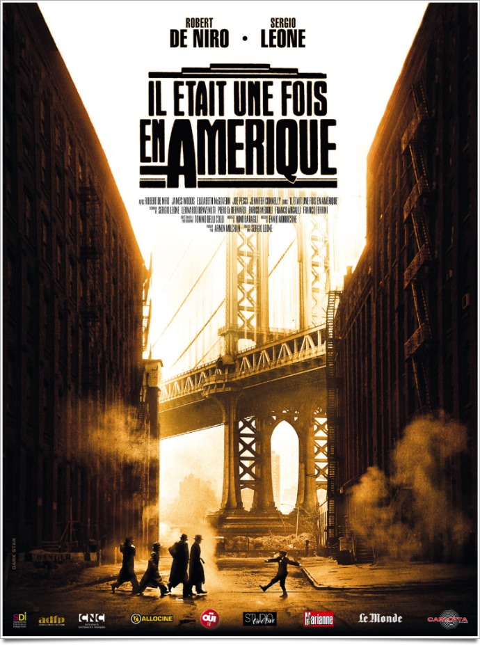
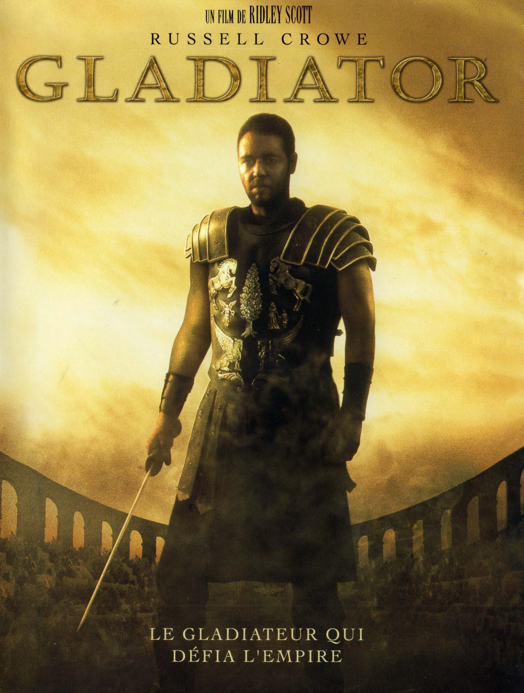
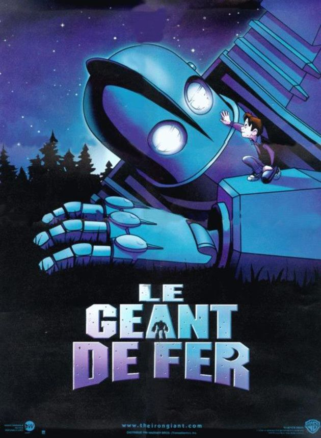

My Favorite movies
|  |
IL ÉTAIT UNE FOIS EN AMÉRIQUEIl était une fois deux truands juifs, Max et Noodles, liés par un pacte d'éternelle amitié. Débutant au début du siècle par de fructueux trafics dans le ghetto de New York, ils voient leurs chemins se séparer, lorsque Noodles se retrouve durant quelques années derrière les barreaux, puis se recouper en pleine période de prohibition, dans les années vingt. Jusqu'au jour où la trahison les sépare à nouveau. |
|---|---|
|  |
GladiatorLe général romain Maximus est le plus fidèle soutien de l'empereur Marc Aurèle, qu'il a conduit de victoire en victoire avec une bravoure et un dévouement exemplaires. Jaloux du prestige de Maximus, et plus encore de l'amour que lui voue l'empereur, le fils de MarcAurèle, Commode, s'arroge brutalement le pouvoir, puis ordonne l'arrestation du général et son exécution. Maximus échappe à ses assassins mais ne peut empêcher le massacre de sa famille. Capturé par un marchand d'esclaves, il devient gladiateur et prépare sa vengeance. |
|  |
Le Geant de ferQuelque chose de gigantesque se profile à l’horizon. Hogarth Hugues vient tout juste de sauver un énorme robot tombé du ciel. Le jeune Hogarth a désormais un très grand ami et un problème encore plus grand : Comment garder secrète l’existence d’un géant de 15m, mangeur d’acier (avec un penchant pour les voitures de la décharge qui sont délicieuses) ? Cette mission se complique encore plus lorsqu’un agent du gouvernement un peu trop curieux arrive en ville pour chasser « l’envahisseur alien » et que les forces terrestres, maritimes et aériennes des militaires américains sont envoyées pour démolir le géant. Résultat : une incroyable aventure faite de métal, de magie, mais surtout pleine de cœur. |